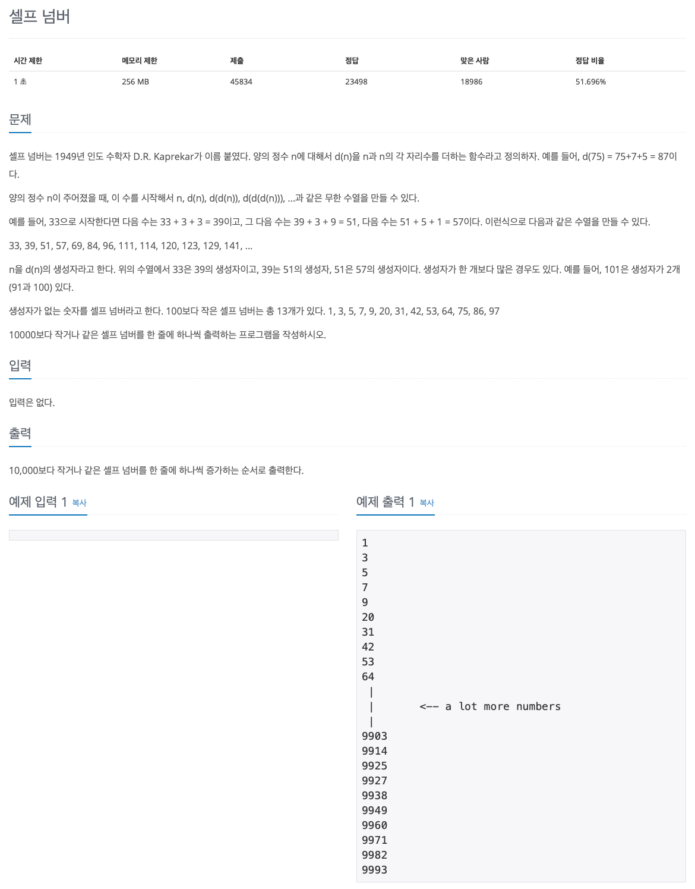

백준 문제 풀이: 4673 - 셀프 넘버

문제 파악
생성자의 개수와 관계없이 생성자가 없는 숫자가 셀프 넘버이므로, 생성자의 존재 여부만 확인하면 된다.
생성자의 존재 여부를 어떻게 해결할 것인지에 초점을 맞춘다.
문제 풀이
여러 숫자에 대해 각 숫자가 생성자를 가지는지 아닌지 판단하는 것은 매우 많은 계산량을 필요로 하게 된다.
그렇다면, 반대로 생각해보자.
특정 숫자를 생성자로 가지는 다음 숫자는 문제에서 정의한 d(n) 함수를 통해 쉽게 구할 수 있을 것이다.
또한, 반복적으로 해당 함수를 적용하면, 계속해서 해당 생성자를 가지는 숫자들을 구할 수 있다.
셀프 넘버의 정의가 생성자가 없는 숫자이므로, 생성자를 가지는 숫자들은 셀프 넘버가 아닌 것이다.
위의 방법으로 셀프 넘버가 아닌 숫자들을 빠르고 쉽게 구할 수 있다.
그리고 이 문제처럼 범위가 주어진다면, 소수를 구할 때 체를 걸러내는 방식인 에라토스테네스의 체(Sieve of Eratosthenes)의
원리를 적용하기에 적합하다.
주어진 범위에 대해 생성자로부터 셀프 넘버가 아닌 숫자들을 걸러낸다면, 결국에는 셀프 넘버만 남게 된다.
(에라토스테네스의 체로 소수를 구하는 방법은 Codeforces 문제 풀이: 230B - T-primes 포스트에서 확인할 수 있다.)
위와 같은 원리로, 10001개 요소를 가지는 배열 sn을 정의하고, 셀프 넘버만 남기도록 체를 거른다.
그리고 다시 순회하며 셀프 넘버만 출력하면 된다.
참고로 10001개 요소를 선언한 이유는 0을 제외한 숫자 맵핑을 쉽게 하기 위해서다.
풀이 소스
문제 풀이 환경: Python 3.7
1
2
3
4
5
6
7
8
9
10
11
12
13
def d(n):
return n + sum(i for i in map(int, str(n)))
n = 10000
sn = [1] * (n + 1)
for i in range(n):
dn = d(i + 1)
if dn <= n:
sn[d(i + 1)] = 0
for i in range(n):
if sn[i + 1]:
print(i + 1)